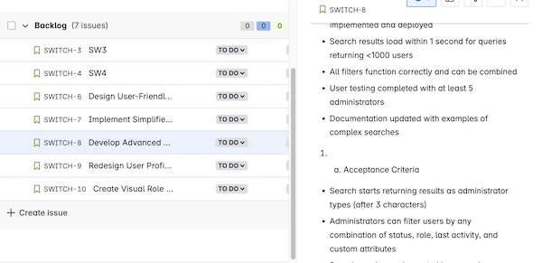
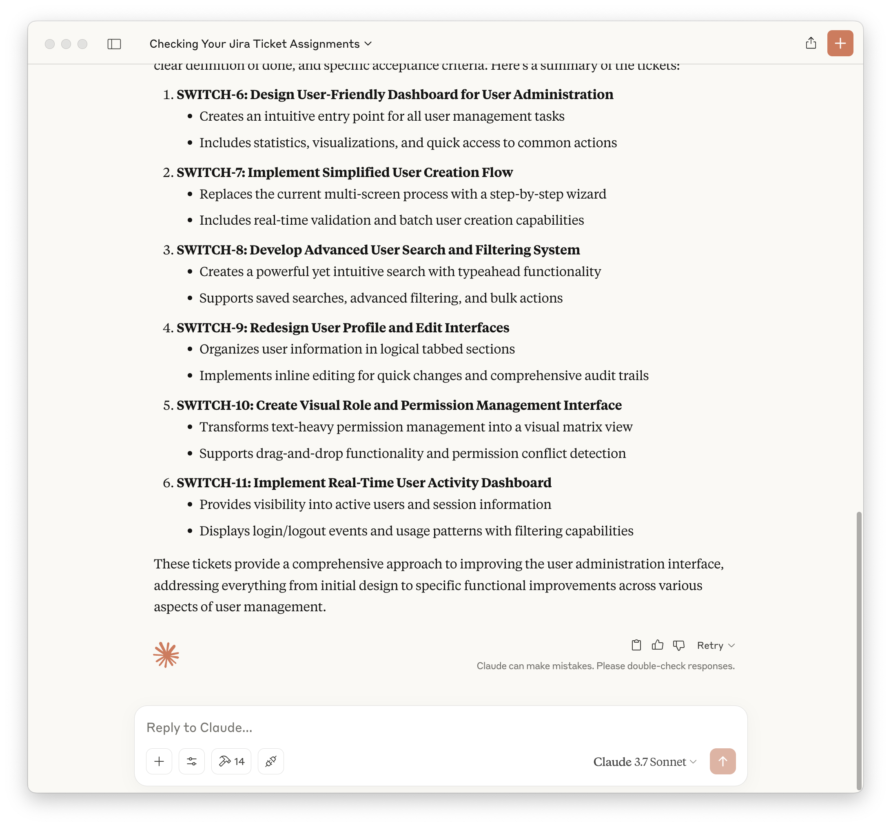
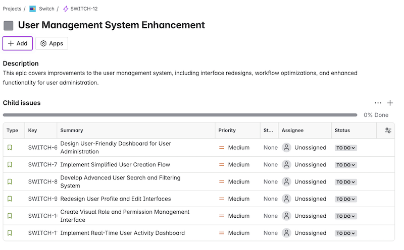

Using AI and Model Context Protocol to create more usable Jira Tickets
The Problem
I have seen ticket systems with unusable ticket description. Sometimes way too much, sometimes just one line description. I have an interims PO job at the moment and I feel it. Describing everything, to make it easy for the developer to follow what I want is hard work. Some of it is just like boiler plate in coding. And it is easy to forget details.
A new technology, a new solution
AI helps programmers to write, understand code, generate unit tests. What has AI ever done for Product Owners? Ok, Deep Research and ping-ponging product ideas. But else?
Thanks to Model Context Protocol (MCP) your friendly AI can now generate a good base of tickets for your developers.
There is a MCP server for Jira (and confluence) to do that.
To use it in Claude Desktop edit the /Library/Application Support/Claude/claude_desktop_config.json (MacOS) config like:
{
"mcpServers": {
"mcp-atlassian": {
"command": "uvx",
"args": [
"mcp-atlassian",
"--confluence-url=https://your-company.atlassian.net/wiki",
"--confluence-username=your.email@company.com",
"--confluence-token=your_api_token",
"--jira-url=https://your-company.atlassian.net",
"--jira-username=your.email@company.com",
"--jira-token=your_api_token"
]
}
}
}
Have uv installed (brew install uv) and install the mcp server (uvx mcp-atlassian).
My random, very simple test prompt:
You are a product owner for a webapp which allows user administration.
You task is it to come up with a new, more user friendly UI.
In the SWITCH project in Jira , create 5 or more new tickets describing
tasks on how to create a new UI for user administration. Give it a title
and a meaningful description with a defininition of done and
acceptance criteria.
created 6 tickets detailing on what needs to be done.
 
Conclusion
With more thought and a good product description we will get to detailed tickets which breaks down the tasks even more. Better prompting and meta prompt is needed but this can be interesting. No more one liners, but of course the danger is that more AI slop is generated and the PO does not pay attention. Just like in programming, you need to understand what the AI is doing for you.
Next step: The result can be fed into cursor which then generates the code. I made this joke 6 months ago and it seems like we are one step closer. And yes, maybe in the future we don’t need these tickets anymore.
Bonus
As I asked Which stories in the SWITCH jira project do not have an epic? it found all stories and suggested to create an epic for the just created stories. It did not change the 4 original stories since they had no content and are meaningless. Nice!
